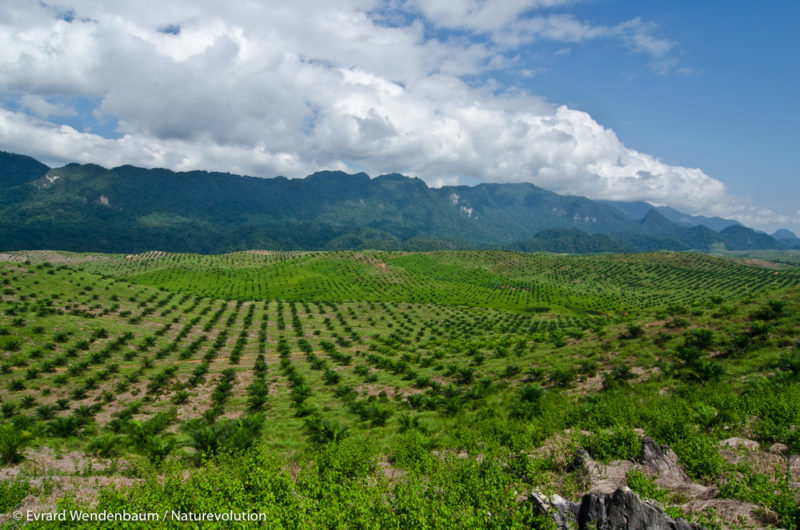
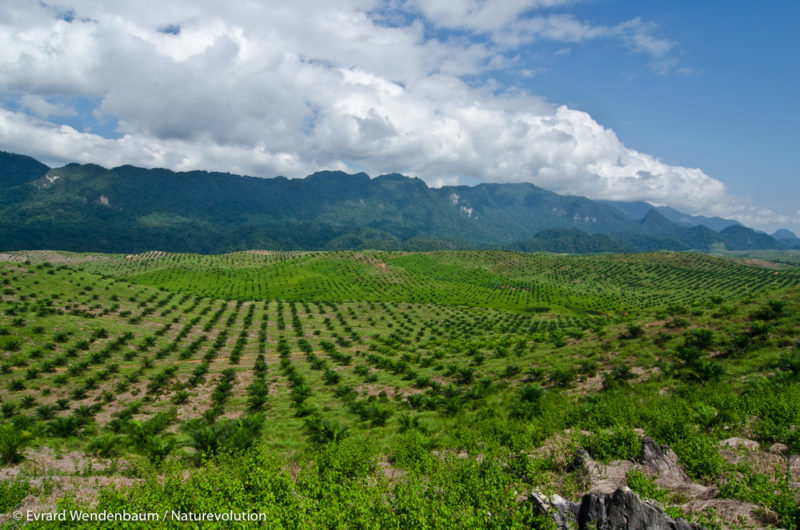

Nuestra misión
« Los Héroes de la Tierra » es una iniciativa liderada por estudiantes para crear conciencia, educar y tomar acciones concretas contra la deforestación en Haití. Nuestro proyecto se centra en la participación activa de los jóvenes, la participación comunitaria y la elección de especies locales adecuadas.


 
